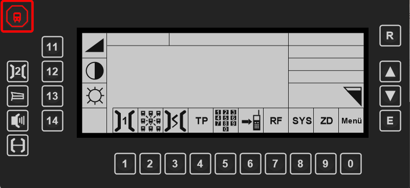

<!DOCTYPE html>
<html lang="de">
<head>
    <meta charset="UTF-8">
    <meta name="viewport" content="width=device-width, initial-scale=1.0">
    <title>GSM-R Terminal Login</title>
    <style>
        /* Grunddesign: Schwarz und technisches Grün */
        body, html {
            margin: 0;
            padding: 0;
            width: 100%;
            height: 100%;
            background-color: #050505;
            font-family: 'Courier New', Courier, monospace;
            display: flex;
            justify-content: center;
            align-items: center;
            color: #00ff41;
        }

        /* Das Login-Fenster */
        #login-container {
            width: 400px;
            padding: 40px;
            border: 2px solid #00ff41;
            box-shadow: 0 0 15px rgba(0, 255, 65, 0.2);
            text-align: center;
            background: #0a0a0a;
        }

        h1 {
            font-size: 1.5rem;
            margin-bottom: 20px;
            text-transform: uppercase;
            letter-spacing: 2px;
        }

        .input-group {
            margin-bottom: 25px;
            text-align: left;
        }

        label {
            display: block;
            margin-bottom: 8px;
            font-size: 0.9rem;
        }

        input {
            width: 100%;
            padding: 12px;
            background: #000;
            border: 1px solid #00ff41;
            color: #00ff41;
            font-family: inherit;
            font-size: 1.1rem;
            box-sizing: border-box;
            outline: none;
        }

        input:focus {
            box-shadow: 0 0 10px rgba(0, 255, 65, 0.5);
        }

        button {
            width: 100%;
            padding: 12px;
            background: #00ff41;
            color: #000;
            border: none;
            font-family: inherit;
            font-weight: bold;
            font-size: 1rem;
            cursor: pointer;
            transition: 0.3s;
        }

        button:hover {
            background: #008f11;
            color: #fff;
        }

        #status-msg {
            margin-top: 20px;
            font-size: 0.8rem;
            min-height: 1em;
        }

        /* Versteckt das Funkgerät am Anfang */
        #gsmr-interface {
            display: none;
            text-align: center;
        }

        #gsmr-interface img {
            max-width: 90vw;
            border: 5px solid #333;
        }
    </style>
</head>
<body>

    <div id="login-container">
        <h1>GSM-R System</h1>
        <div class="input-group">
            <label>Triebfahrzeugführer-ID:</label>
            <input type="text" id="tf-id" placeholder="ID eingeben..." autocomplete="off">
        </div>
        <div class="input-group">
            <label>Zugnummer (Fplo/Zuggattung):</label>
            <input type="number" id="train-id" placeholder="z.B. 42301" autocomplete="off">
        </div>
        <button onclick="attemptLogin()">SYSTEM STARTEN</button>
        <div id="status-msg">Bereit zur Anmeldung...</div>
    </div>

    <div id="gsmr-interface">
        <h2 style="color: white;">GSM-R AKTIV</h2>
        
        <p style="color: #aaa;">Status: Verbunden mit Netz 'DB-Netz'</p>
    </div>

    <script>
        function attemptLogin() {
            const tfId = document.getElementById('tf-id').value;
            const trainId = document.getElementById('train-id').value;
            const status = document.getElementById('status-msg');

            if (tfId === "" || trainId === "") {
                status.innerText = "FEHLER: Felder dürfen nicht leer sein!";
                status.style.color = "red";
                return;
            }

            // Kleiner Lade-Effekt für die Immersion
            status.innerText = "Prüfe Zugdaten...";
            status.style.color = "#00ff41";

            setTimeout(() => {
                status.innerText = "Initialisiere Funkmodem...";
                
                setTimeout(() => {
                    // Login-Fenster ausblenden, Interface einblenden
                    document.getElementById('login-container').style.display = 'none';
                    document.getElementById('gsmr-interface').style.display = 'block';
                    console.log("GSM-R gestartet für TF: " + tfId + " | Zug: " + trainId);
                }, 1500);

            }, 1000);
        }
    </script>
</body>
</html>
